01_main_methods 主面板：完整方法比较
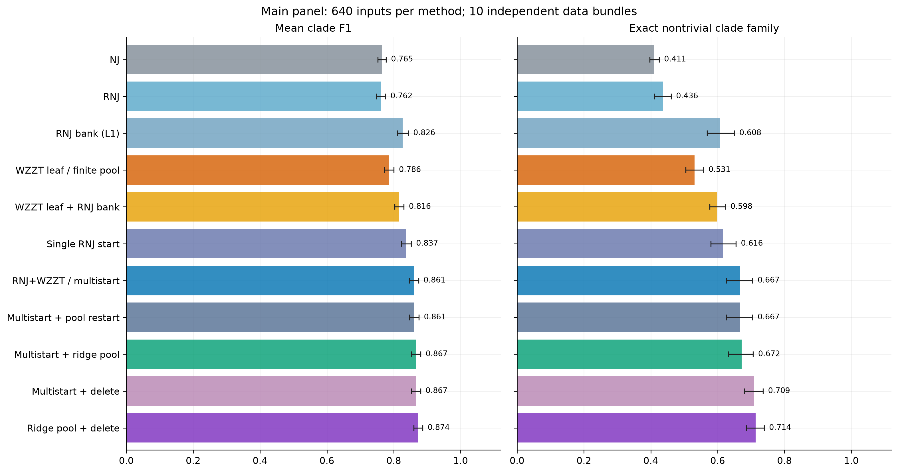
F1与exact均针对非平凡末端簇集合。误差棒按十个bundle均值重采样，显示逐项95%区间；640条件共享四个固定网络。
PNG · PDF · 绘图CSV
02_noise_sample_size 噪声 × 数据量：六种主要方法
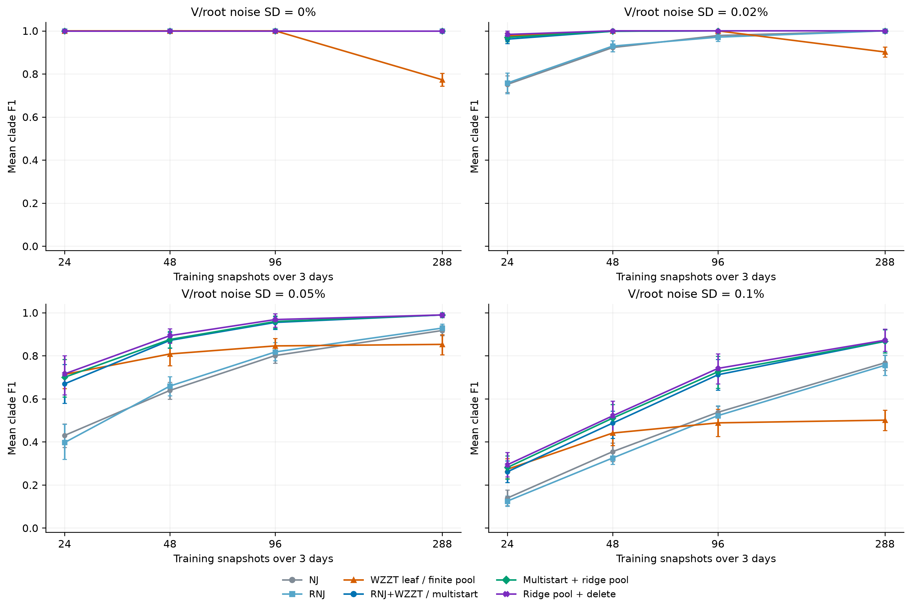
每点四网络×十bundle；区间按bundle分块。N为三个物理日的嵌套采样总量，V=0仍保留P/Q噪声0.5%。
PNG · PDF · 绘图CSV
03_each_network 逐网络的噪声与数据量曲线
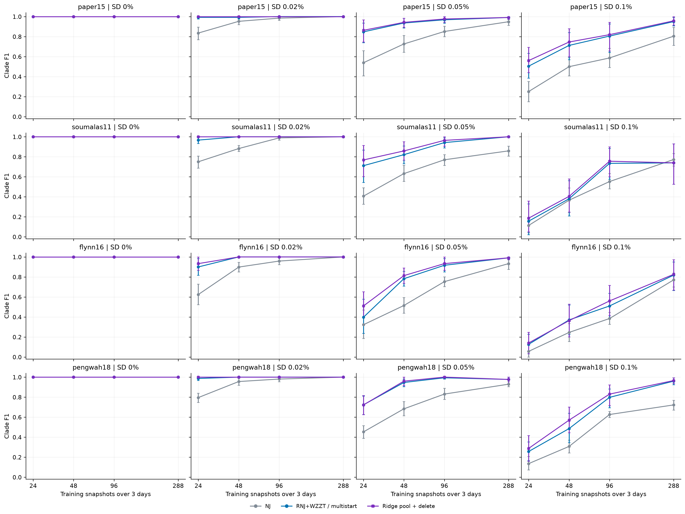
每个小图固定网络和噪声，每点十个独立数据bundle；区间逐点计算。
PNG · PDF · 绘图CSV
04_F1_heatmaps 各方法F1全条件矩阵
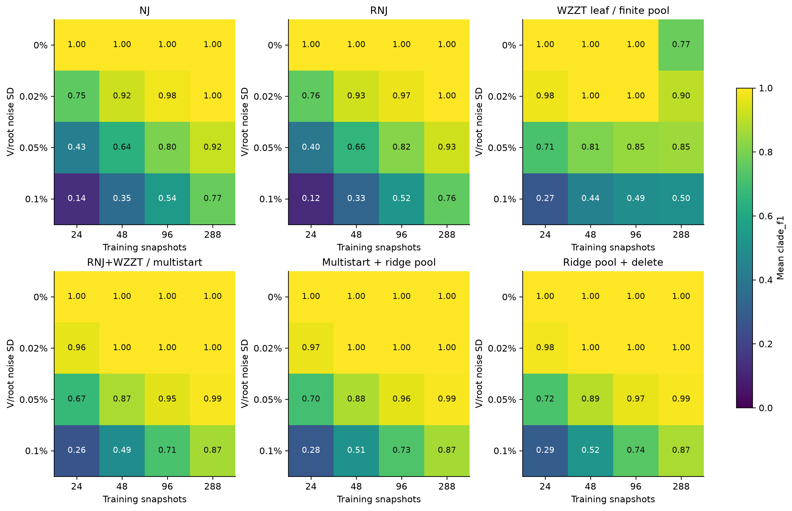
每格40输入，按四固定网络×十数据bundle平均；原分母保留。图中数字为均值，逐点区间见绘图CSV。
PNG · PDF · 绘图CSV
05_exact_heatmaps 各方法exact全条件矩阵
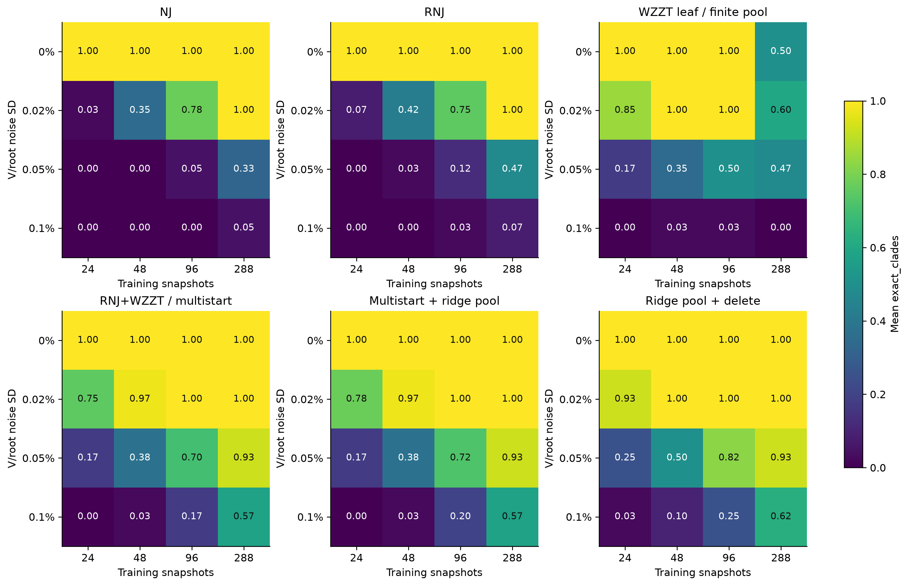
每格40输入，按四固定网络×十数据bundle平均；原分母保留。图中数字为均值，逐点区间见绘图CSV。
PNG · PDF · 绘图CSV
06_component_gain_maps 配对增量：多初值、扩池、删除
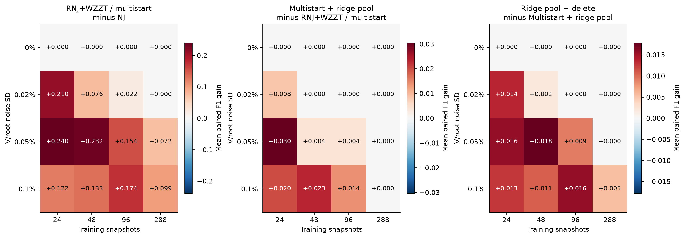
同一输入上先相减，再按十bundle平均。各小图使用独立对称色标，数字给出实际效应量。
PNG · PDF · 绘图CSV
07_precision_recall 精确率、召回率与采样量
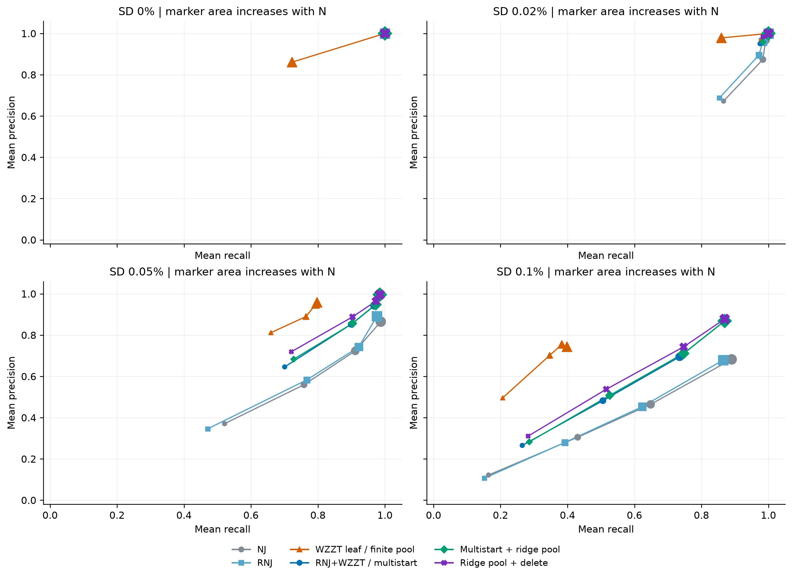
每个点为固定噪声/N下四网络×十bundle的均值。线连接同一方法的N24→48→96→288；标记由小到大对应这四个N，用于观察漏簇与过细分。
PNG · PDF · 绘图CSV
08_paired_bundle_effects 每个独立数据重复上的配对收益
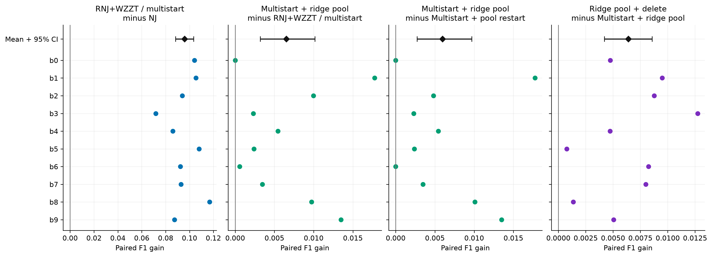
每点一个bundle，先在该bundle内平均全部64个网络/噪声/N条件。黑色点为均值与95%区间。原三主检验的Holm结果保留于原报告。
PNG · PDF · 绘图CSV
09_linear_test_error 独立测试日的平方压降误差
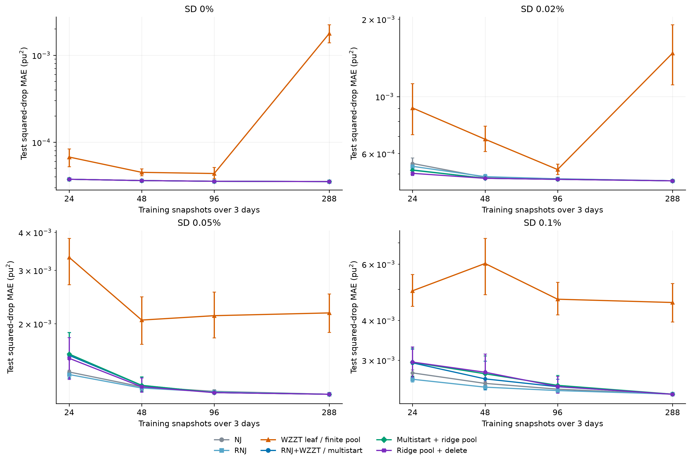
固定训练参数后评价独立测试日；纵轴为平方压降MAE，单位p.u.^2。区间按十bundle；误差统计以可用模型为条件。
PNG · PDF · 绘图CSV
10_response_errors R/X响应矩阵误差
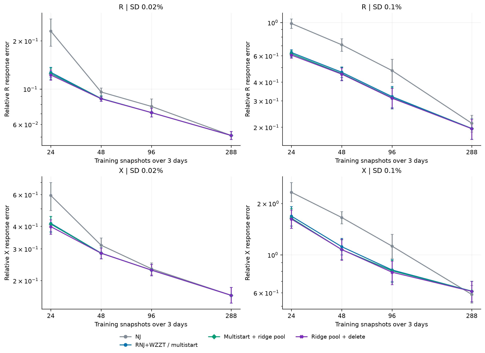
相对Frobenius误差；R/X是平方压降响应矩阵，不是逐条线路阻抗误差。每点四网络×十bundle。
PNG · PDF · 绘图CSV
11_stress_conditions 十类场景 × 两档数据量
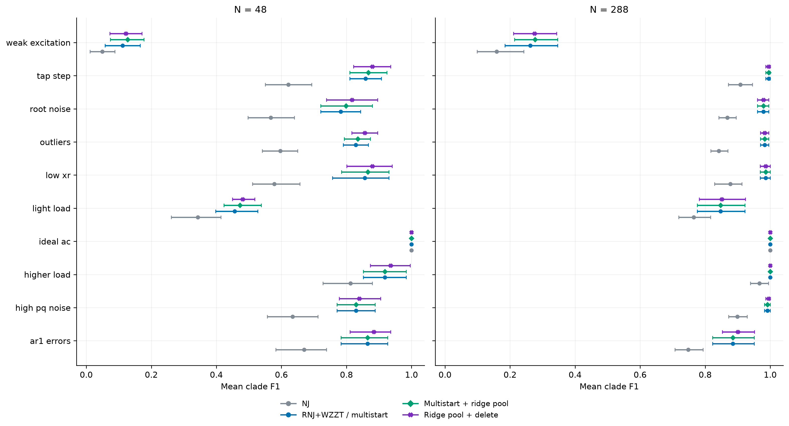
每个场景/N含四网络×五bundle；区间按五bundle。所有方法使用同一条件数据。
PNG · PDF · 绘图CSV
12_stress_gains 各场景相对多初值的收益
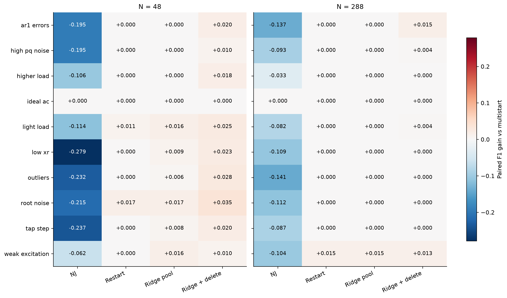
先对相同输入配对相减；原池追加修正控制额外搜索预算。颜色统一，完整五bundle区间在CSV中。
PNG · PDF · 绘图CSV
13_unseen_size 新拓扑的规模、噪声与恢复性能
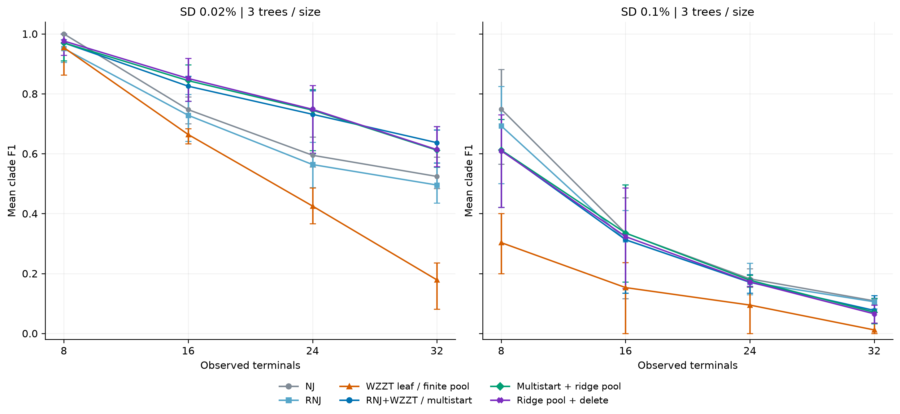
每档三棵新树，按树均值重采样；共享三个数据bundle和N48/288。原LP15缺失保留为零分，同时CSV记录可用数。
PNG · PDF · 绘图CSV
14_each_unseen_tree 十二棵新树逐一比较
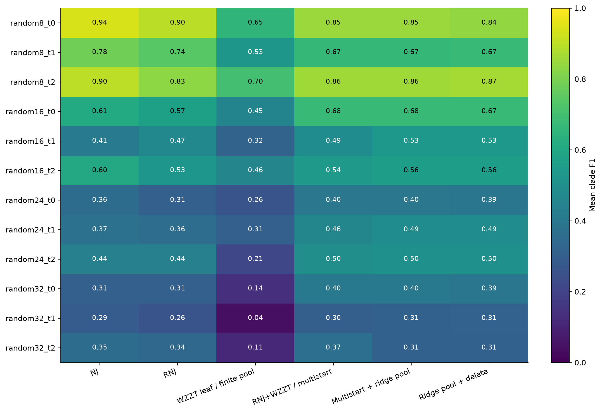
各格平均该树的三个数据bundle、两噪声与两个N；逐树展示，避免总体均值掩盖网络差异。
PNG · PDF · 绘图CSV
15_case33_recovered case33恢复覆盖：逐行注明预算
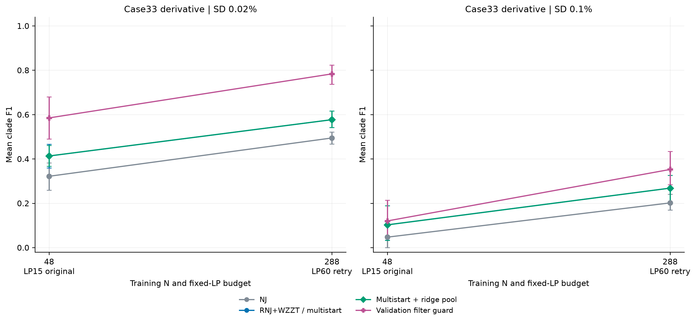
同一棵端点化case33，五个数据bundle。N48为原LP15，N288为独立LP60重试；预算不同，数据量效应与预算不作单因素因果分解。过滤保护为探索性输出。
PNG · PDF · 绘图CSV
16_physical_voltage 实际AC电压与压降尺度
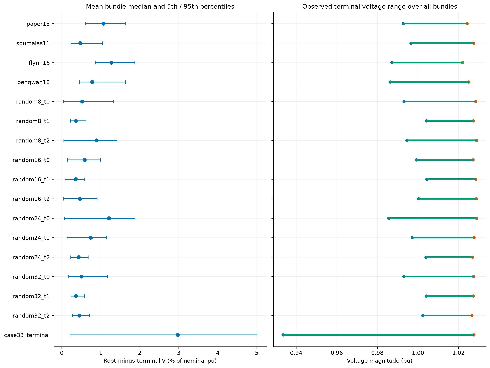
无噪声物理数据，合并训练/验证/测试九日。左侧为每bundle分位数再平均的描述性范围，右侧为全体极值；均非置信区间。
PNG · PDF · 绘图CSV
17_excitation_meter_noise 激励条件、信号与计量误差
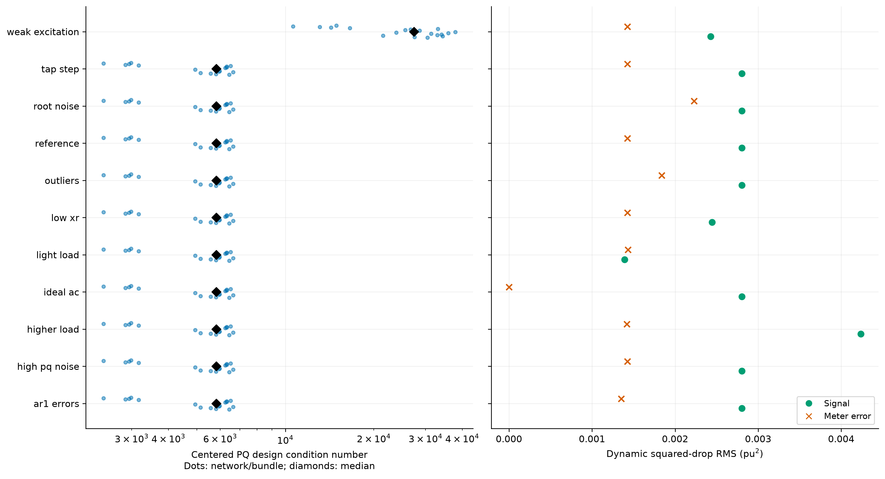
每个点先汇总同一网络/bundle的三个训练日；原诊断使用每日96点，不是训练N子集。此图为描述性分布，未把日内快照当独立重复。
PNG · PDF · 绘图CSV
18_predeclared_ablations 预定消融：正则化、预算、删除与候选库
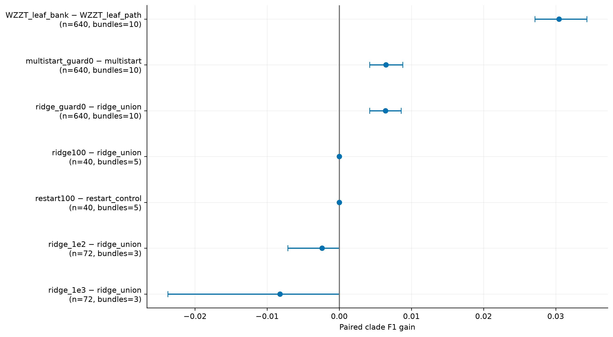
每行仅与自身匹配输入上的参考比较，子面板分母不同。区间按各自bundle；原单bundle两步结果保留在数据索引，十bundle扩展另图展示。
PNG · PDF · 绘图CSV
19_joint_extension 十bundle两步扩展的收益与分布
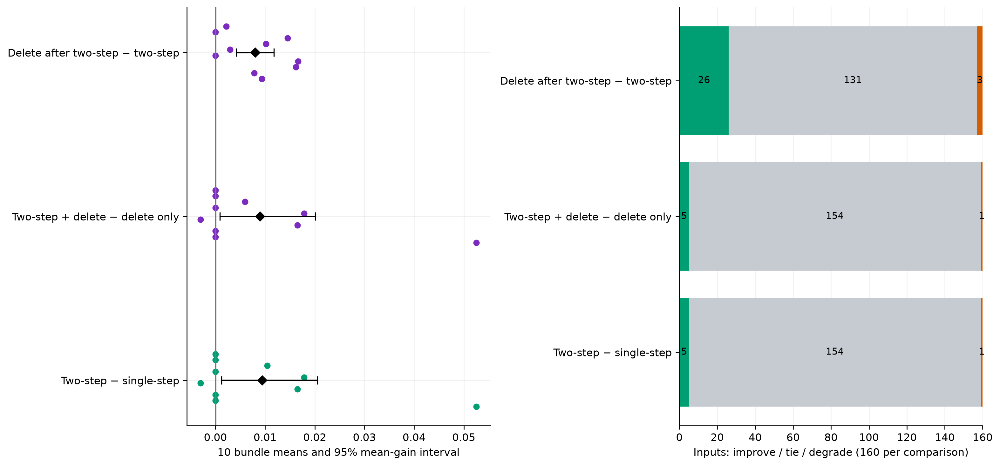
次要扩展复用原主面板数据，固定父模型库与算法。每点一个bundle；并列展示稀疏收益与退化计数。完整区间、符号检验及最终来源保留在数据库/原表。
PNG · PDF · 绘图CSV
20_filter_sensitivity 最终过滤阈值的结构与预测影响
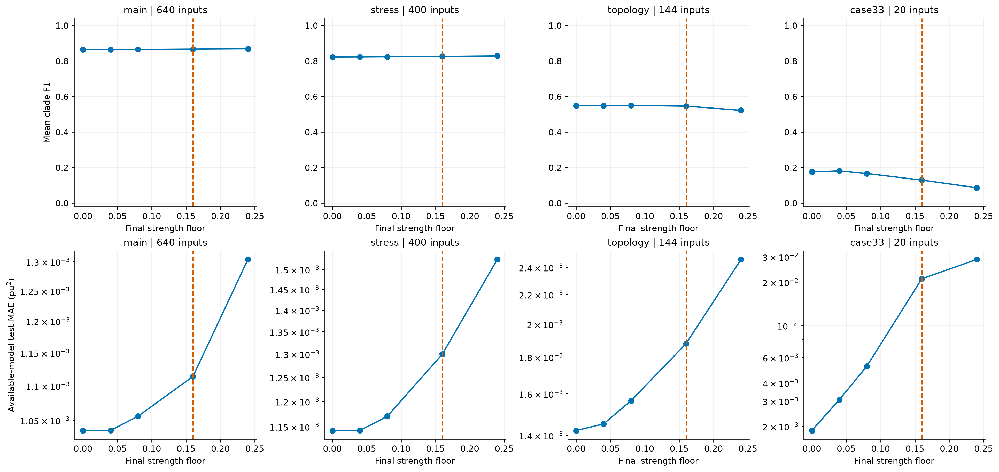
固定同一收缩前预选模型，仅改变最终阈值；未重新拟合或搜索。F1保留全部输入分母，MAE按可用模型统计；五阈值属于探索性诊断。
PNG · PDF · 绘图CSV
21_filter_guard_tradeoff 验证过滤保护：预测与拓扑的不同变化
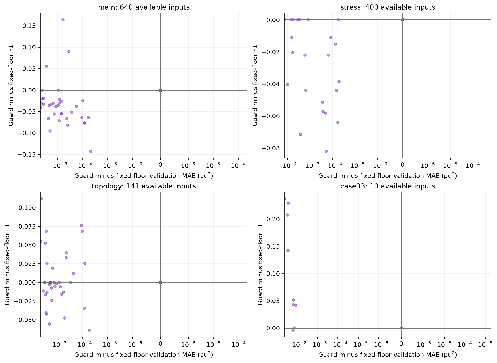
同一预选模型上验证误差不增，拓扑F1仍可能下降。图只展示可用的1191个模型；原13条不可用记录仍在模型总表。新树/case33的预先冻结补充检查标记在prospective_filter_holdout字段。
PNG · PDF · 绘图CSV
22_failure_diagnostics 候选覆盖、错误交叉与过细分
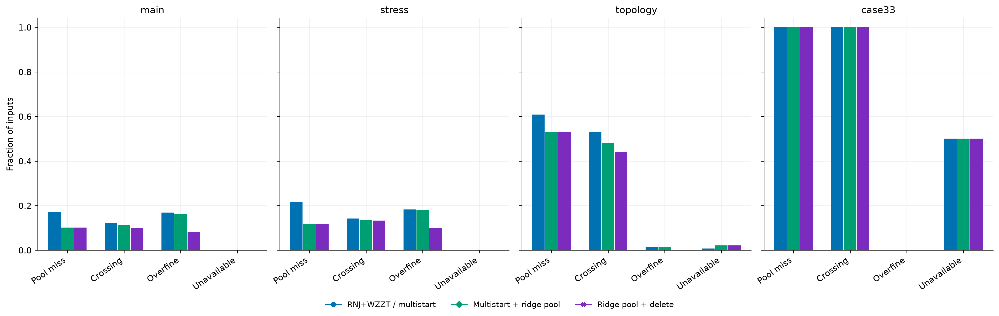
前三项以可用模型为分母，unavailable以全部计划输入为分母。过细分指非平凡预测簇多于真簇；最终交叉是结构诊断，时间先后证据另见逐步事件。
PNG · PDF · 绘图CSV
23_greedy_objective 完整扫描中的一步训练目标偏好
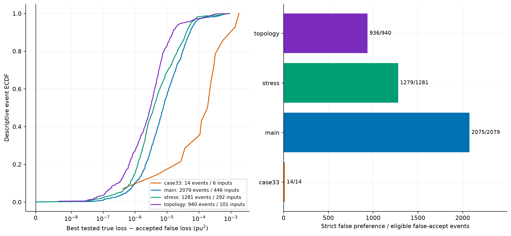
仅保留完整有限池扫描且测过真簇提案的错误正权簇接受事件。严格偏好阈值1e-8；多个事件可属于同一输入，不作为独立重复或长期阻挡的充分证据。
PNG · PDF · 绘图CSV
24_finite_pool_stops 有限池局部停止、预算与不可用记录
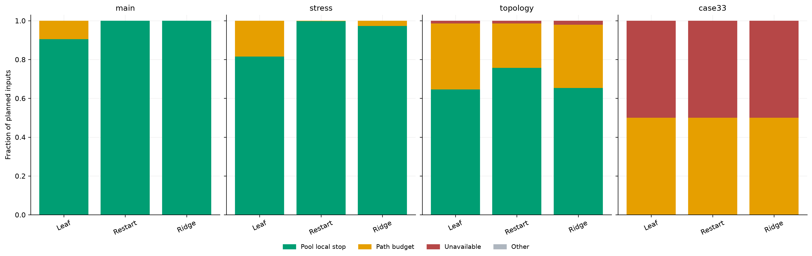
局部停止针对当前有限候选邻域；不可用是共享工作进程阶段未生成记录，不直接归因于各算法不可行。
PNG · PDF · 绘图CSV
25_free_domain_and_gap 自由域策略与原生MILP gap
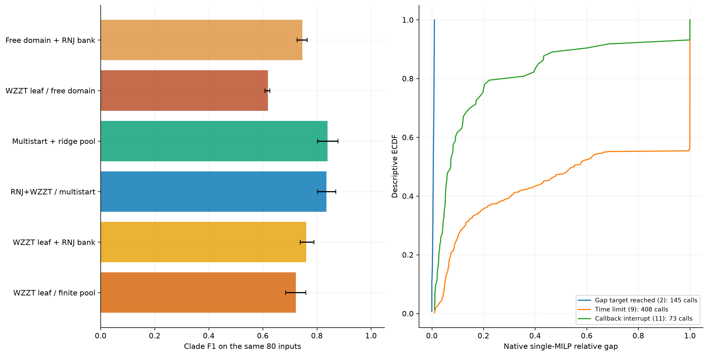
左侧80匹配输入、五bundle区间。自由域100秒路径采用兼容簇追加，有限池25秒修正允许交叉替换；比较完整策略。右侧626次调用，gap属于单步模型，状态2按本轮1%容差终止。
PNG · PDF · 绘图CSV
26_LP60_recovery 原共享进程缺失与LP60恢复
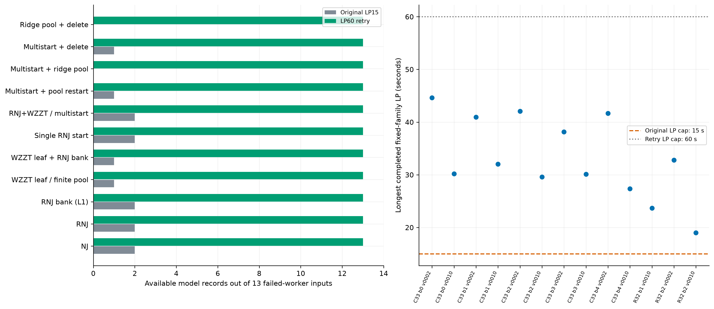
十三组原LP15触时输入均以独立LP60重试恢复；左侧可用性包含原checkpoint已有结果。不同预算分别保留，原触时不被覆盖。
PNG · PDF · 绘图CSV
27_runtime_accuracy 独立运行成本与配对精度
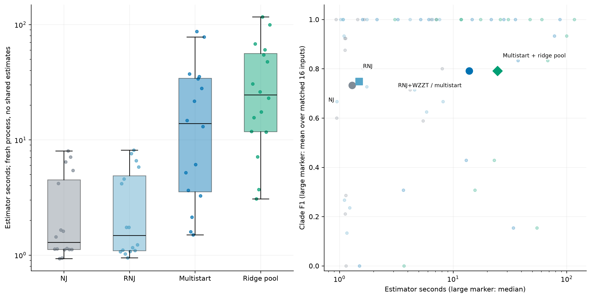
每方法16个相同输入，各用新进程顺序重放。CPU/Gurobi环境见原hardware.json；不含AC后处理。右侧为固定bundle0的描述性成本/精度，不将16条件当独立重复。
PNG · PDF · 绘图CSV
28_AC_test_prediction AC重估后的独立测试电压误差
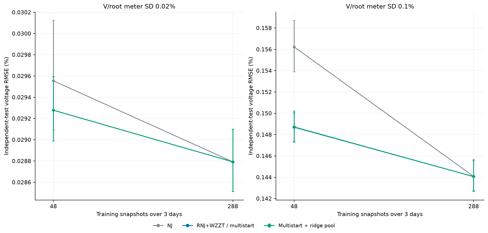
只用训练数据重估线参数，冻结后评价独立测试日。纵轴为相对电压幅值RMSE百分数；按十bundle计算逐点区间。与平方压降MAE分开解释。
PNG · PDF · 绘图CSV
29_AC_error_topology AC残差与拓扑F1的对应关系
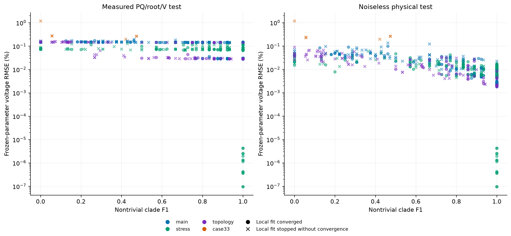
原批次580个去重的输入/参数组合；同一模型被多个方法选中时只画一次。标记区分局部参数拟合收敛与否，低残差作为预测指标。
PNG · PDF · 绘图CSV
30_AC_cost_convergence AC计算成本和局部收敛
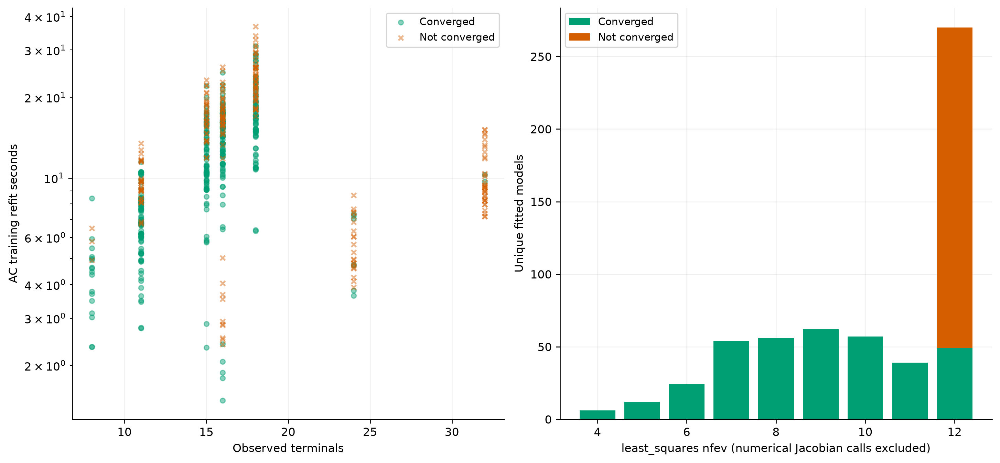
max_nfev=12约束求解器的主函数评价计数，数值Jacobian额外潮流调用另计。图用实际seconds记录成本，580个原批去重模型均保留。
PNG · PDF · 绘图CSV
31_topology_paper15 拓扑示例：paper15
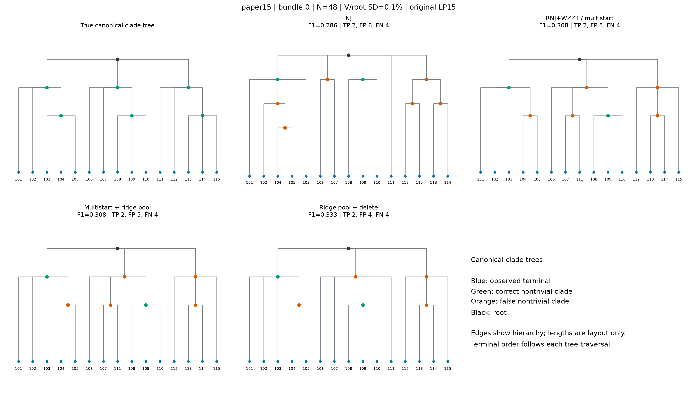
示例按网络、bundle0、固定噪声与N选取，不按结果优劣筛选。图为非平凡簇的规范层级，压缩根/叶的平凡结构；边长只作布局。case33为LP60补充，过滤保护为探索性方法。
PNG · PDF · 绘图CSV
32_topology_soumalas11 拓扑示例：soumalas11
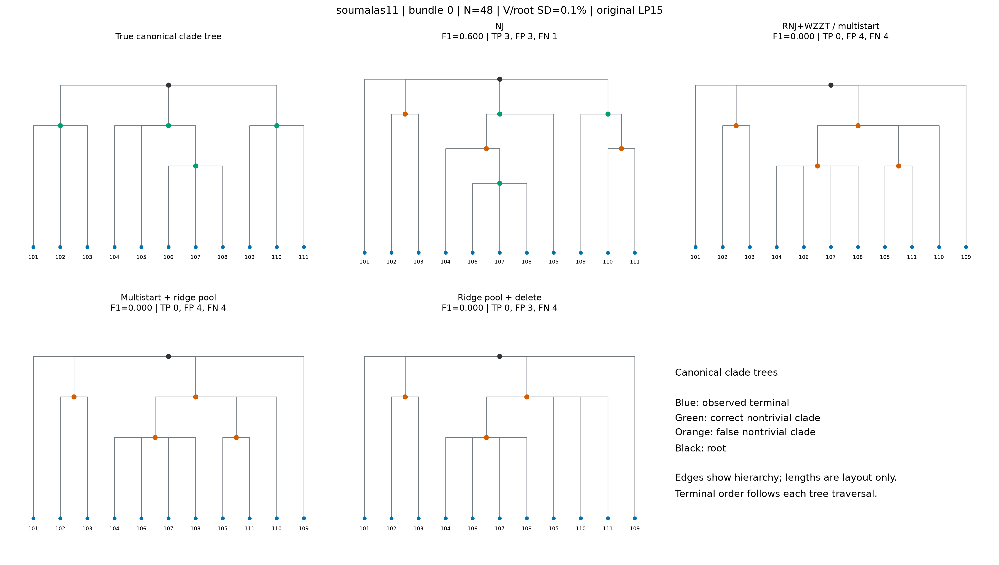
示例按网络、bundle0、固定噪声与N选取，不按结果优劣筛选。图为非平凡簇的规范层级，压缩根/叶的平凡结构；边长只作布局。case33为LP60补充，过滤保护为探索性方法。
PNG · PDF · 绘图CSV
33_topology_flynn16 拓扑示例：flynn16
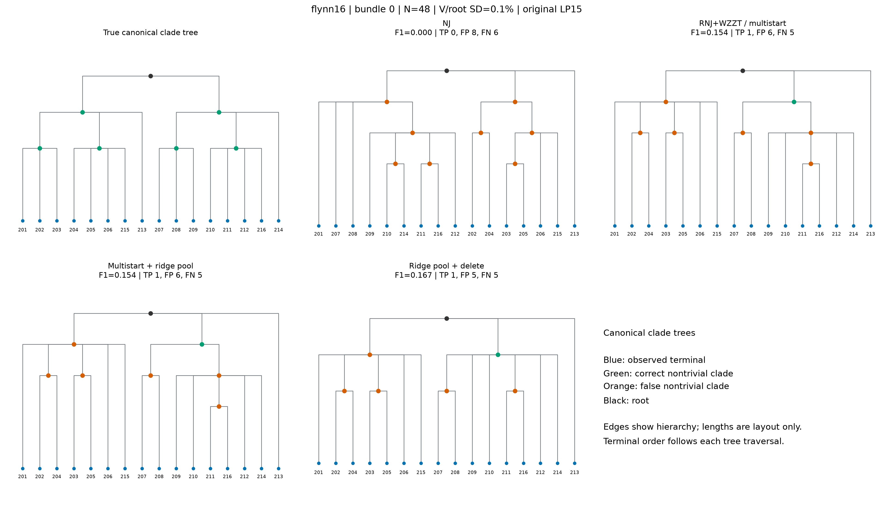
示例按网络、bundle0、固定噪声与N选取，不按结果优劣筛选。图为非平凡簇的规范层级，压缩根/叶的平凡结构；边长只作布局。case33为LP60补充，过滤保护为探索性方法。
PNG · PDF · 绘图CSV
34_topology_pengwah18 拓扑示例：pengwah18
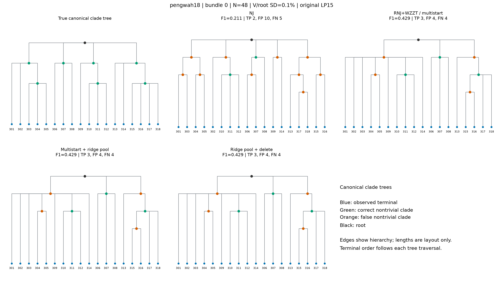
示例按网络、bundle0、固定噪声与N选取，不按结果优劣筛选。图为非平凡簇的规范层级，压缩根/叶的平凡结构；边长只作布局。case33为LP60补充，过滤保护为探索性方法。
PNG · PDF · 绘图CSV
35_topology_random32_t1 拓扑示例：random32_t1
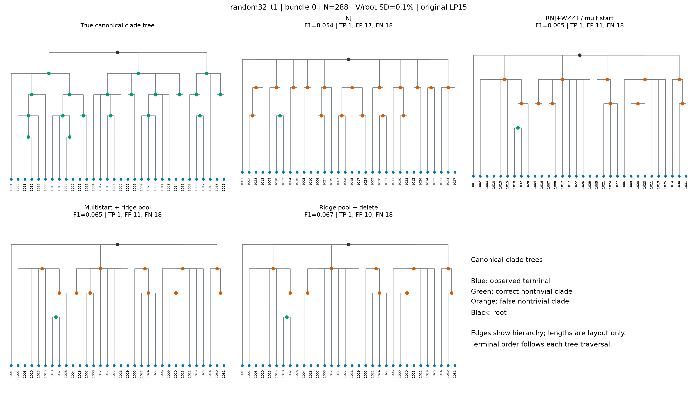
示例按网络、bundle0、固定噪声与N选取，不按结果优劣筛选。图为非平凡簇的规范层级，压缩根/叶的平凡结构；边长只作布局。case33为LP60补充，过滤保护为探索性方法。
PNG · PDF · 绘图CSV
36_topology_case33_terminal 拓扑示例：case33_terminal
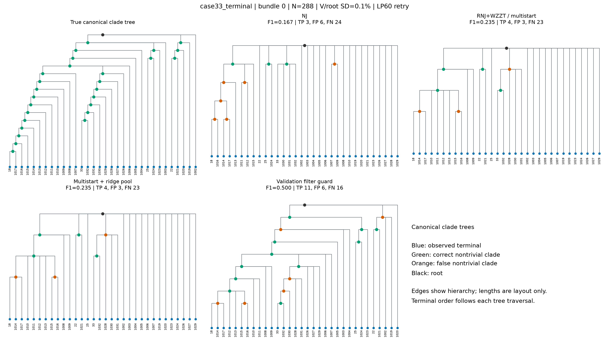
示例按网络、bundle0、固定噪声与N选取，不按结果优劣筛选。图为非平凡簇的规范层级，压缩根/叶的平凡结构；边长只作布局。case33为LP60补充，过滤保护为探索性方法。
PNG · PDF · 绘图CSV